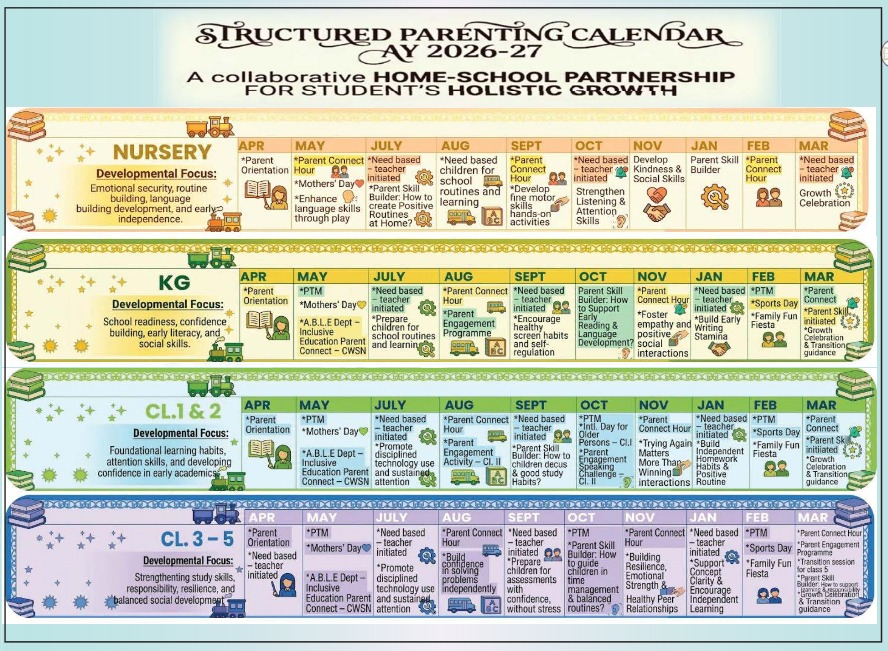
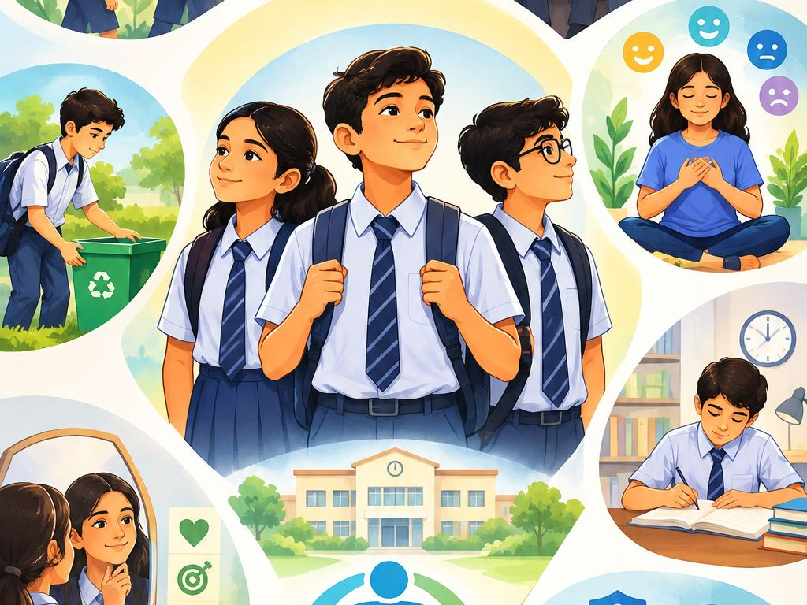
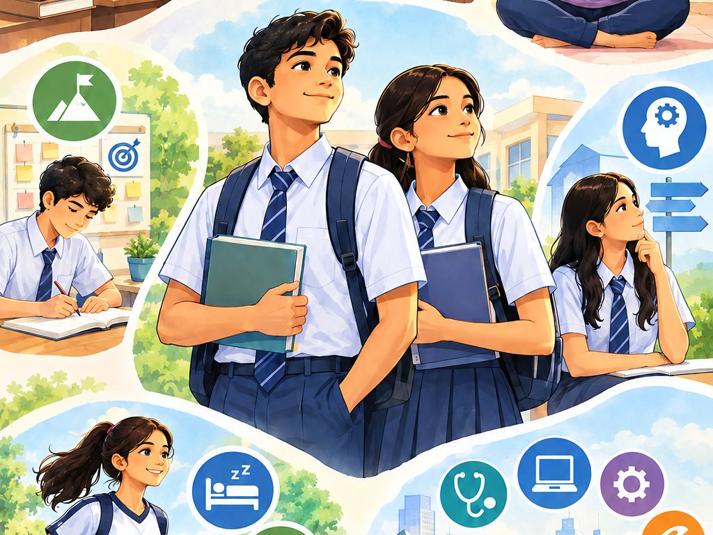
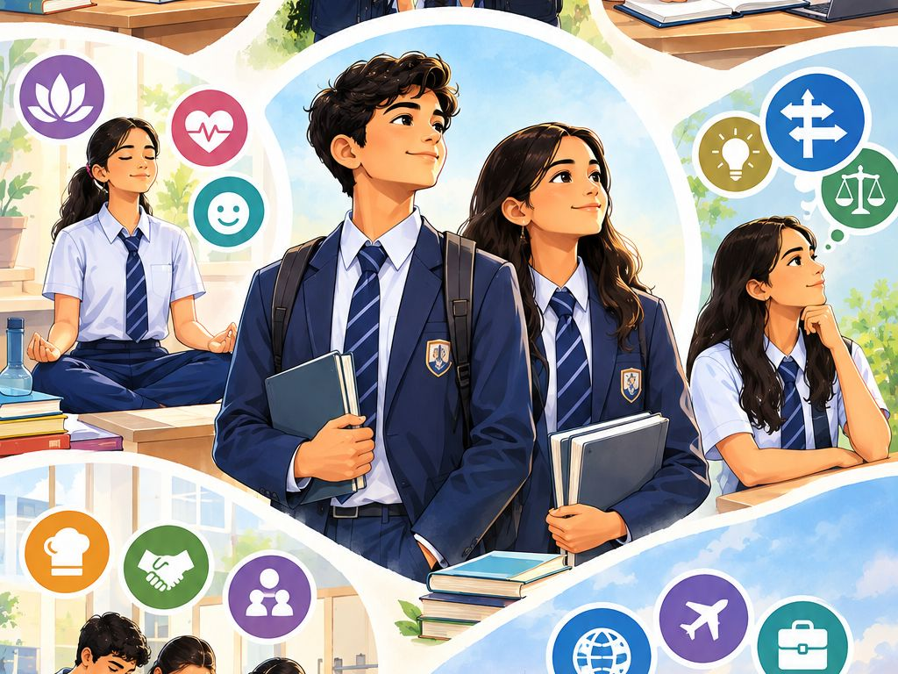
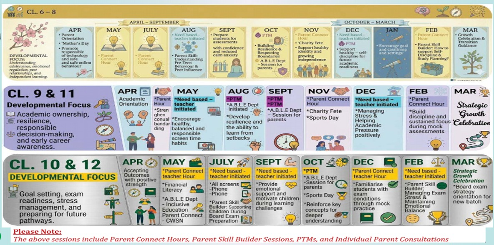

Foundation Stage
- Secure relationships and emotional safety
- Routines and predictable boundaries
- Language-rich interaction
- Play, movement and exploration
- Independence in everyday tasks
- Positive social behaviours
Children do not grow in a straight line, and neither does parenting. What a five-year-old needs is not what a fifteen-year-old needs. Choose your child’s school stage below to find the guidance, classroom practices and parenting calendar that belong to that phase of the journey.
Every stage of childhood brings unique opportunities for growth. Understanding your child’s developmental needs helps build confidence, curiosity, and lifelong learning.

One Learning Partnership
Teacher-Led Learning Framework
Teachers play a vital role in creating meaningful learning experiences that go beyond academics, nurturing curiosity, confidence, positive habits, and essential life skills among young learners. Classroom practices are designed to integrate social-emotional learning, values, collaboration, creativity, and responsible behaviour, helping children develop strong foundations for lifelong learning.
Helping children understand their strengths, express themselves, and develop a positive sense of identity.
Encouraging teamwork, kindness, respect, and appreciation of diverse perspectives.
Supporting learners in recognising and managing emotions effectively.
Developing curiosity, independence, organisation, and ownership of learning.
Nurturing integrity, respect, compassion, and responsible choices in everyday situations.
Promoting healthy habits, mindfulness, and awareness of personal well-being.
Building safe, ethical, and responsible use of technology from an early age.
Learning Through Exploration
Social Understanding & Early Regulation
Emerging Independence & Self-Awareness
Foundational Skill Building
Active Learning & Self-Expression
Structured Parenting Calendar AY 2026–27 — a collaborative home–school partnership for student holistic growth.

Growing up is more than achieving academic success — it is about building character, making responsible choices, and discovering purpose. Together, parents and educators can help every adolescent navigate this journey with confidence, resilience, and hope.

Identity • Independence • Belonging

Purpose • Performance • Resilience

Direction • Decision • Future Readiness
From
Towards
As children grow, parenting does not become less important — it becomes different.
For the Adolescent Learner
Teacher-Led Learning Framework
Teachers play a critical role in guiding adolescents through a period of significant academic, emotional, and personal transformation. Classroom experiences are intentionally designed to strengthen critical thinking, self-management, leadership skills, ethical decision-making, and future readiness while supporting learners in navigating challenges with confidence and resilience.
Helping students understand their aspirations, strengths, values, and evolving sense of purpose.
Developing the ability to manage emotions, cope with challenges, and maintain mental well-being.
Encouraging inquiry, reflection, problem-solving, and informed choices.
Building communication skills, teamwork, accountability, and leadership capacity.
Promoting self-directed learning, goal setting, perseverance, and continuous improvement.
Preparing students to navigate the digital world safely, ethically, and responsibly.
Supporting students in developing skills, confidence, and awareness for higher education and future pathways.
Personal & Academic Growth
Life Preparation & Identity Formation
Future Readiness & Well-Being
Structured Parenting Calendar AY 2026–27 — a collaborative home–school partnership for student holistic growth.

As education evolves in alignment with NEP 2020 and the National Curriculum Framework, we are committed to ensuring that parents feel informed, supported, and actively involved throughout this journey. See how ISWK supports parents through clear communication, consultation, workshops, Parent Connect Hours and PTMs.
ISWK remains committed to creating a supportive and collaborative environment where students feel confident, parents feel empowered, and educators work together to ensure every learner successfully navigates change and embraces new opportunities.